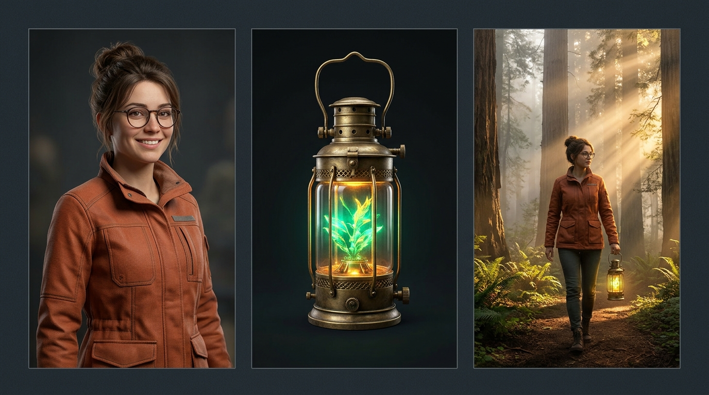
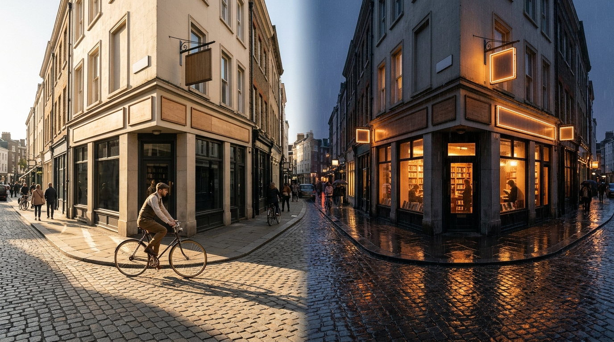

The complete, step-by-step visual guide to planning, generating, directing, and editing cinematic AI films with Veo 3.1, Imagen 4, and Gemini.
Most AI video tools give you a single text box that produces random 5-second clips. Google Flow (flow.google) is a complete digital film studio built to tell multi-shot stories with consistent characters, sound, and editing.
You can start experimenting with Google Flow in under two minutes for free, then scale up only if you need longer productions, premium models, or 4K exports.
Visit flow.google (or labs.google/fx/tools/flow) in Chrome, Safari, or Edge, or install the Google Flow iOS/Android companion app.
Sign in with a personal Google Account or qualifying Google Workspace account. Age verification (18+) is required in supported regions.
Click + New Project. Every project acts as a dedicated folder holding your chat history, Ingredients, clips, and Scenebuilder timeline.
| Plan Tier | Typical US Price | Credit Allowance | Best For & Unlocked Capabilities |
|---|---|---|---|
| Free Tier Google Account |
$0 / month | 50 daily credits Resets midnight PT; no rollover |
Learning the interface, generating Imagen reference Ingredients, and testing draft clips daily. |
| Google AI Plus Entry Creator |
~$4.99 – $9.99/mo | Daily pool + starter monthly credit bundle | Casual social creators making weekly vertical Reels/Shorts (9:16) and custom Flow Tools. |
| Google AI Pro Standard Production |
~$19.99 / month | Expanded monthly production credits | Full Veo 3.1 Fast & Quality access, native audio dialogue, Scenebuilder transitions, 1080p masters. |
| Google AI Ultra Studio / Agency |
~$99.99 – $199.99/mo | Highest bulk monthly credits + priority queue | Heavy commercial production, highest-tier Veo 3.1 Quality renders, batch takes, and 4K upscaling. |
Before every generation, Google Flow displays the exact credit cost badge right next to the Generate button. Cost scales with four sliders: Model Tier (Lite/Fast vs. Quality), Output Count (1, 2, or 4 simultaneous takes), Clip Duration, and Resolution (draft vs. 1080p/4K).
When you open a project in flow.google, everything lives inside one dark-mode studio screen. Use the numbered callouts below to orient yourself in seconds.
@ Mentions: Describe camera, action, and dialogue; type @ to inject saved characters or props directly into the scene.16:9 or 9:16), clip length, Audio ON/OFF, and preview exact credit cost.Beginners often make the mistake of jumping straight to video generation. Follow this proven 6-step studio order to build a cohesive 30-second short film on your very first try—without wasting credits.
| Stage | What You Click & Type in Google Flow | Resulting Output |
|---|---|---|
| 1. Plan (2 mins) |
Open Flow Agent and type: "Create a 3-shot, 24-second atmospheric film about a botanist discovering a glowing fern in a misty redwood forest. 35mm cinema style." | Flow Agent writes a 3-shot breakdown with suggested camera lenses, lighting notes, and ambient forest audio cues. |
| 2. Ingredients (3 mins) |
In the Ingredients panel, click + Generate. Create a portrait of Clara (terracotta jacket, round glasses) and a brass plant lantern. Tag them @clara and @lantern. |
Two locked visual reference cards appear in your left sidebar ready to anchor every video shot. |
| 3. Shot 1 (3 mins) |
Select Ingredients to Video, 16:9, 8s, Audio ON. Prompt: "Wide crane shot descending into misty redwoods at dusk as @clara walks down a mossy trail carrying @lantern..." |
Veo 3.1 renders Clara in her exact jacket holding the exact lantern, complete with footsteps on damp moss and distant owls. |
| 4. Shot 2 (3 mins) |
Hover over Shot 1, click Save Last Frame, switch to Frames to Video, and set it as the Start Frame. Prompt a close-up push-in as she kneels and whispers, "There you are." | Shot 2 picks up seamlessly from the exact forest spot and lighting of Shot 1 with lip-synced whispered dialogue. |
| 5. Shot 3 & Edit (4 mins) |
Generate a macro shot of the glowing fern, drag all three clips into Scenebuilder, trim 0.5s off the ends for snappy pacing, and click Export (1080p / 4K). | A polished, continuous 24-second short film downloaded as a single MP4 with synchronized sound. |
The #1 frustration in AI video is watching your main character morph into a stranger from Shot 1 to Shot 2. Google Flow solves this with two paired tools: Agent Instructions and Ingredients to Video.
Inside the Flow Agent panel, open Agent Instructions (project-level rules). Anything you write here is automatically remembered across every storyboard and prompt Gemini writes for this project:
Switch your prompt bar to Ingredients to Video to combine up to 3 visual reference assets (uploaded photos or Imagen/Nano Banana generations) into one coherent video clip:

Generate or upload character portraits against a plain, softly lit background—not a busy crowd. Clean edges stop background clutter from bleeding into unrelated scenes.
Once @clara is attached, don't waste 40 prompt words re-describing her brown hair and glasses. Spend your prompt words on action, emotion, camera, and sound.
Combining 1 Character + 1 Hero Prop + 1 Environment/Style card hits the sweet spot. Overloading 5+ conflicting objects confuses spatial composition.
Ask Imagen inside Flow for a "front and three-quarter profile turnaround sheet" of your hero so Veo understands how they look when turning their head.
Every shot in Google Flow starts by choosing one of three generation modes. Picking the right mode before typing saves hours of trial-and-error.
| Mode | Inputs Required | Ideal Use Case |
|---|---|---|
| Text to Video | Text prompt only | Establishing shots, b-roll landscapes, atmospheric weather, abstract transitions, or brainstorming brand-new scenes from scratch. |
| Ingredients to Video | 1–3 reference images (@tags) + prompt |
Character-driven scenes, product commercials, or branded worlds where the exact face, outfit, or object must appear in new angles. |
| Frames to Video | Start Frame (and/or End Frame) + prompt | Exact composition control, seamless shot-chaining, dramatic reveals, morphs, and day-to-night or before-and-after transitions. |
When you drop an image into the Start Frame slot and a second image into the End Frame slot, Veo 3.1 calculates realistic intermediate physics, lighting shifts, and camera motion to connect point A to point B:

Play your generated 8-second clip in the Shot Canvas and scrub to the final clean frame (e.g., 0:07.9).
Click Save Frame on the video player. Google Flow instantly adds that exact still image into your project assets.
Switch to Frames to Video, drop that saved frame into Start Frame, and direct the next 8 seconds of action!
Treat Google Flow's prompt box like a film director's cue sheet—not a search engine. Ordering your prompt from big visual rules down to specific audio cues gives Veo 3.1 crystal-clear instructions.
| Beginner Vague Prompt | Upgraded Google Flow Director Prompt | Why It Wins |
|---|---|---|
| "A cool car driving fast in the desert." | "1970s matte-black muscle car speeding down a cracked salt-flat highway at golden hour. Low-angle lateral tracking shot at wheel height, 24mm wide lens, dust plume billowing behind tires. Deep V8 engine roar and rushing wind; no music." | Defines camera height, focal length, time of day, dust physics, and raw engine audio. |
| "A barista hands coffee to a customer and talks." | "Warm indie film look. Smiling barista @leo slides a ceramic latte cup across a walnut counter in a sunlit cafe. Over-the-shoulder medium shot, soft morning window light, rising steam. @leo says, 'Careful, the mug is hot,' in a friendly tone. Ceramic clink, espresso machine hiss, quiet cafe chatter; no music." | Locks speaker attribution, short lip-syncable quote, tactile prop action, and layered room tone. |
| "Product video of a smartwatch." | "Commercial studio macro film. Sleek titanium @watch resting on wet black basalt stone as water droplets roll off the sapphire screen. Slow 180-degree orbital arc, 85mm macro lens, crisp rim lighting. Subtle water droplet plinks; no voiceover." | Combines @watch Ingredient with orbital camera motion and tactile surface reflections. |
Avoid generic words like "moving camera." Veo 3.1 is trained on real cinematography terminology—use the exact movement phrases below to direct intentional, rock-steady shots.
Camera physically rolls forward toward subject, building intimacy or tension."Slow dolly-in to close-up"
Camera glides sideways alongside a walking or running subject."Side-profile lateral tracking shot"
Circles smoothly around hero or product while keeping them centered."Smooth orbital arc around subject"
Sweeps vertically upward to reveal a vast landscape or city skyline."High crane shot rising above trees"
Camera stays planted in one spot and rotates left/right or up/down."Locked tripod slow pan right"
Shifts sharp focus from a foreground object to a background character."Rack focus from teacup to doorway"
| Visual Dimension | Copy-Paste Keywords Recognized by Veo 3.1 & Imagen 4 |
|---|---|
| Film Stocks & Era | 35mm Kodak Vision3 500T • 16mm grainy documentary film • IMAX 65mm crisp cinema • vintage 1990s VHS camcorder |
| Focal Length & Glass | 24mm wide-angle lens (expansive environments) • 50mm prime natural eye-level • 85mm portrait shallow bokeh • 100mm macro |
| Lighting Setups | warm golden-hour backlight • overcast soft diffused daylight • high-contrast chiaroscuro rim light • volumetric fog beams |
| Camera Rig Feel | static locked-off tripod • smooth Steadicam glide • subtle handheld documentary urgency • FPV drone dive |
16:9 (YouTube, TV, film), while vertical 9:16 (Shorts, Reels, TikTok) works best with tight medium close-ups, dolly push-ins, and vertical crane tilts.
With Audio toggled ON, Veo 3.1 generates lip-synced speech, physical Foley sound effects, and room ambience simultaneously with video pixels—no external lip-sync plugin required.
Attribute the quote directly to the speaker:
Good: @clara looks up and says, "Follow the river north," in an urgent whisper.
Bad: Clara tells them to go north.
Natural human speech runs ~2.2 words per second. In an 8-second clip, cap dialogue at 10 to 16 words so the actor finishes speaking naturally before the cut.
Add a short performance note right after the quote: "in a warm, raspy voice," "with breathless excitement," "deadpan and monotone," or "through a crackly radio."
Don't cram three back-and-forth lines into one clip (causes lip-sync confusion). Generate Shot A (Speaker 1) and Shot B (Speaker 2 reaction), then cut between them in Scenebuilder.
"no background music" for Multi-Shot Films!"quiet room tone, no background music", then lay a single unified music track underneath your finished edit (or only ask for music on standalone one-shot posts).
Once your clips are generated, open Scenebuilder at the bottom of the workspace. Unlike rigid storyboards, Scenebuilder is a flexible "generate, then assemble" timeline with AI continuity superpowers.
[ | ]Click Flow TV in the top header to watch curated short films, music videos, and experiments created inside Google Flow. Studying how top creators frame shots and pace cuts is the fastest free film school on the platform.
Use Flow Tools to build reusable no-code mini-apps in plain English (e.g., bespoke aspect-ratio reframers, retro title overlays, or brand color graders), and use the iOS/Android app to snap real-world photos directly into your Ingredients drawer.
Keep this final page handy while working in flow.google. Almost every frustrating generation has a fast, predictable fix.
| Symptom / Problem | Root Cause & Exact Fix in Google Flow |
|---|---|
| Character's face or outfit changes between shots | You used plain Text to Video. Generate a neutral portrait in Imagen, save it as an Ingredient (@hero), and use Ingredients to Video for every shot. |
| Spoken line gets cut off at the end of the clip | Too many words for clip duration. Trim dialogue to ≤15 words per 8s clip, put exact speech inside "quotes", or split into two shots in Scenebuilder. |
| Clashing music plays under every clip | Veo generated default score per clip. Append "quiet room tone, no background music" to your prompts (and Project Agent Instructions). |
| Visuals look overly glossy, floaty, or "AI-smooth" | Missing lens and texture cues. Add "35mm film grain, natural skin texture, 50mm lens, overcast natural lighting". |
| Jarring jump when cutting from Shot 1 to Shot 2 | Lighting or pose shifted. Use Save Last Frame on Shot 1 → drop into Start Frame of Shot 2, or trim 0.5s off the cut point in Scenebuilder. |
| Hands or complex props warp mid-action | Too many simultaneous actions. Isolate complex prop interactions into a dedicated macro insert shot using an Ingredient card of the prop. |
| Running out of credits too quickly | Rendering 4 takes on Veo Quality while still experimenting. Prototype in Imagen stills + Veo 3.1 Fast/Lite (1–2 takes); switch to Quality only for final hero takes. |
16:9 landscape or 9:16 vertical)"quoted line" + SFX + no music)@Ingredients Tagged? (Hero character & key prop attached)https://flow.google, start a free 50-credit daily session, pitch a 3-shot micro-story to Flow Agent, lock one character Ingredient, and assemble your first scene today.